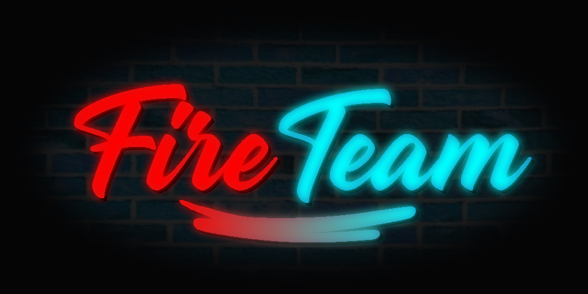
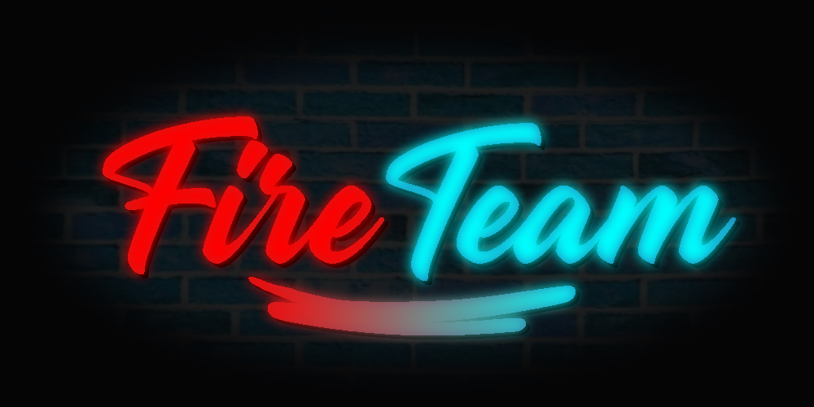
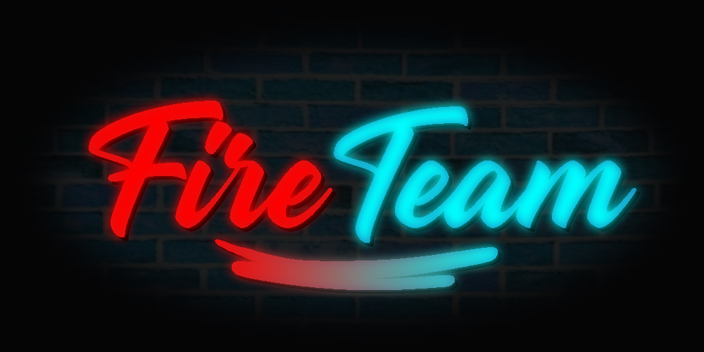
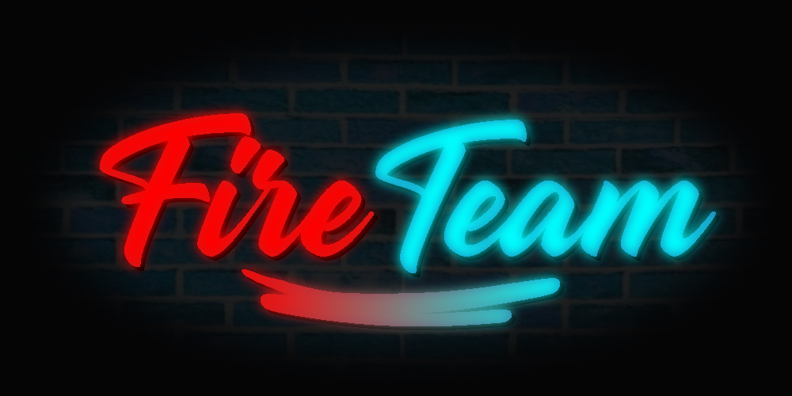

Minecraft est un jeu vidéo de type bac à sable, où le joueur évolue dans un monde fait de cubes. L'imagination est de prime abord dans le mode de jeu créatif où le joueur exprime sa créativité. Dans le mode survie, le joueur doit survivre dans la contrée de cubes, seul ou avec des amis.
C'est Minecraft qui a réunit la Fire Team, l'a formé. C'est dans ses contrées de cubes que nous avons passé le plus de temps. Entre les modes survie et créatifs, les serveurs dédiés du jeu, nous avons grandit avec Minecraft
Communément abrégé ETS2, c'est un simulateur de camionneur, où les joueurs évoluent dans une carte de l'Europe, et effectuent des livraisons d'une ville à l'autre. Croyez nous, on arrive à faire des bêtises quand même
Le 2ème jeu où nous avons le plus rit, que ce soit en faisant des bêtises, où en ayant des bugs provoqués par le multijoueur, ou encore en rencontrant des gens ou situations drôles